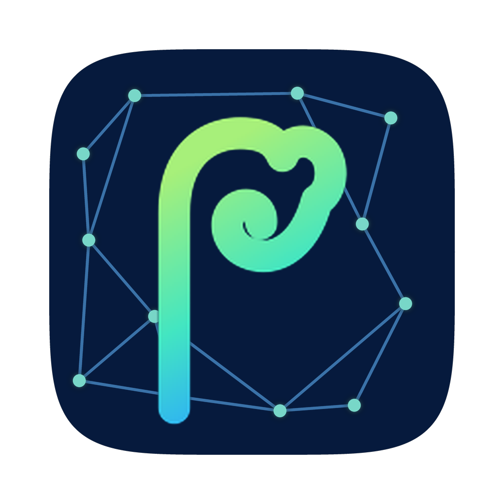

Connecting to the Prefrontal server.
Prefrontal wasn't reachable. If it runs on another machine (e.g. your Mac mini), point this app at its address:
Running the server on this Mac instead? Install the CLI
(pip install -e .) and use Restart Local Server
from the menu-bar icon.